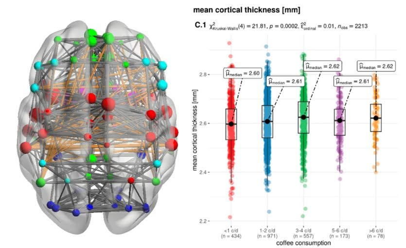

Quoted from the study:
“Our results show that individuals with a regular and moderate coffee consumption of 3 to 4 cups per day had higher cortical thickness and less microstructural white matter alteration, as quantified by the PSMD. Individuals drinking 5 or more cups per day did not significantly differ on any MRI parameter from individuals drinking <1 cup per day, indicating a U-shaped relationship.”
#coffeeHD #brainHD
Association between Coffee Consumption and Brain MRI Parameters in the Hamburg City Health Study
PaperMDPI articlemdpi.com
Daily coffee is linked to stronger white matter and a thicker cortex in the brain.
so the brain’s communication pathways are healthier and more efficient.
And memory, reasoning, and attention, is better.
Note: This research is a valuable piece of the puzzle, suggesting that moderate coffee consumption is likely not harmful to brain structure and may even be beneficial. However, it should not be taken as a definitive recommendation to start drinking coffee or to increase your intake for brain health. The best advice remains to enjoy your coffee in moderation if you already like it, and be mindful of what you put in it.
#neuroscience #coffee
